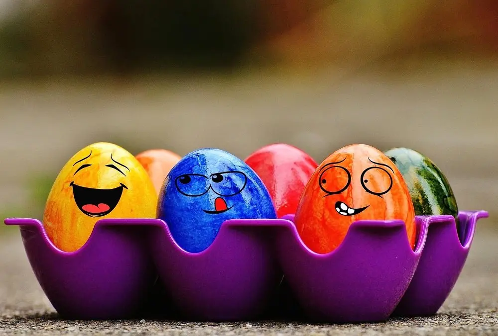
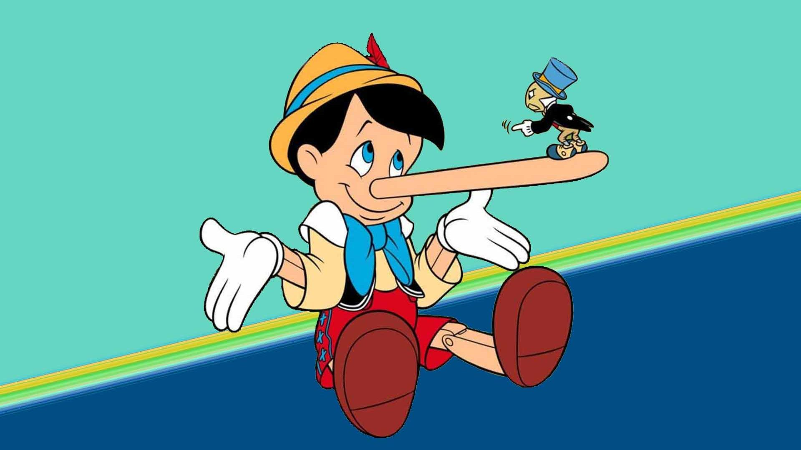

1. Reciprocità
sono brava 8/10
Ripago sempre gli altri quando fanno qualcosa per me, con un favore o regalo personalizzato e significativo per la persona. Il mio segreto è agire in maniera imprevedibile, sorprendendo! Quando devo chiedere aiuto per un homework gioco d'anticipo e penso: quale dei miei colleghi posso aiutare affinché in cambio siano felici di aiutarmi? Tuttavia non offro il mio aiuto, né compro regali per il gusto di indurre le persone ad aiutarmi, l' obiettivo è cercare sinceramente di aiutare qualcuno che in cambio sarebbe felice (e persuaso!) di aiutarmi.
2. Simpatia
sono brava 9/10
Noi umani siamo propensi ad aiutare chi ci sta più simpatico. Le persone che risultano essere più simpatiche sono quelle più simili a noi, chi collabora con noi e chi ci fa complimenti. Quali sono i miei trucchetti per risultare simpatica? Trovo somiglianze e punti in comune anche nelle persone che a primo impatto sembrano essere esattamente il mio opposto, non risparmio mai i complimenti veri, soprattutto quelli che riguardano i dettagli (si sa, sono i dettagli che fanno la differenza!) e quando qualcosa mi piace la esprimo entusiasta!

3. Coerenza
sono brava 6/10
Questo principio di persuasione me l’ha suggerito una persona speciale. Annunciare pubblicamente un obiettivo agli altri ed attaccare dei post-it in luoghi ben visibili, fanno si che ogni giorno io rimanga coerente con ciò che ho detto e scelto di fare. Chiunque si fiderebbe di una persona che parla e agisce in maniera coerente! Non è sempre facile per me, soprattutto perché molte volte ho la tendenza a procrastinare. Ma ad esser onesta, forse la causa principale è un'altra:da bambina la mia favola preferita era Pinocchio, antagonista principale della coerenza…
4. Prova sociale
sono brava 7/10
Decidiamo ciò che è corretto in base a quello che pensiamo possa essere ritenuto corretto dalle altre persone, soprattutto se siamo incerti e quando riguardano persone simili a noi. Questa estate farò un viaggio in Grecia. Per convincere le mie amiche, ho fatto una banale ricerca ed ho visto che la Grecia è la meta che prevede voli a bassissimo prezzo e svariate attività: snorkeling, passeggiate a cavallo sulla sabbia nera, tour con degustazione di vini. Non ho detto nulla di falso alle mie amiche, ma ho semplicemente raccontato i fatti in superficie per aiutarle a fare una scelta!
5. Ambiente rilassante
sono brava 10/10
Ho scoperto questa tecnica crescendo, perché la persuasione mi ha sempre affascinato ed attratto a migliorarla. Anche il contesto svolge un ruolo nella tecnica di persuasione. Un dialogo affrontato in un parco verde, in un lago che brilla alla luce del sole, sedersi ed ammirare la natura intorno a noi, rilassa me e le persone che devo persuadere a dir di si!